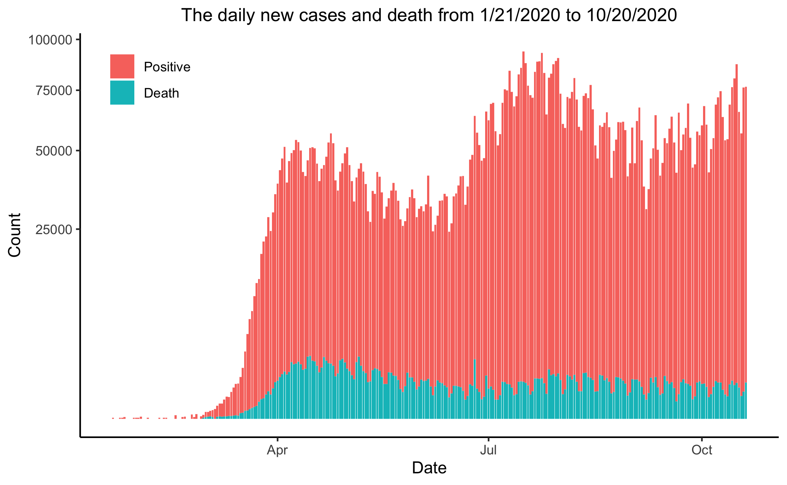
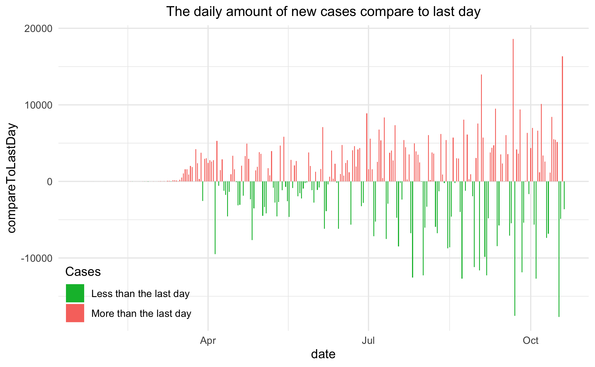
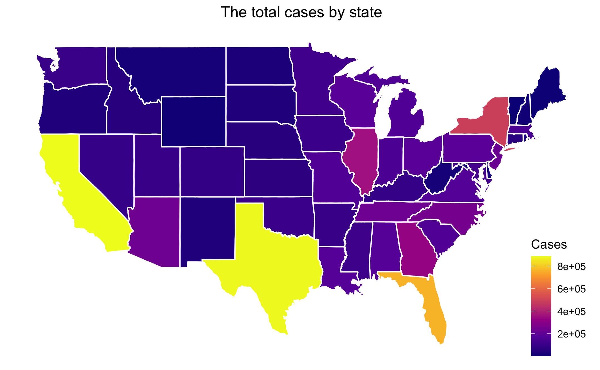
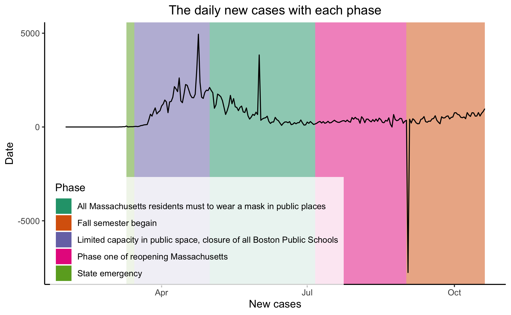
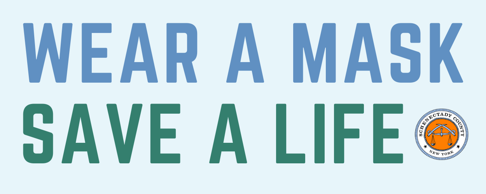

Introducing the data
Since late January, The New York Times has tracked cases of coronavirus in real time as they were identified after testing, and it is now being made available to the public in response to requests from researchers, scientists and government officials who would like access to the data to better understand the outbreak.
The dataset is avalibal on Kaggle through this link.
There are two dataset is being used in this project, below are the data structure for both dataset.
Country.csv- Date
- Cases (The total number of cases of Covid-19, including both confirmed and probable.)
- Deaths (The total number of deaths from Covid-19, including both confirmed and probable.)
- Date
- State
- Fips (Federal Information Processing Standards code.)
- Cases (The total number of cases of Covid-19, including both confirmed and probable.)
- Deaths (The total number of deaths from Covid-19, including both confirmed and probable.)
Nationwide Analyze
The daily new cases and death from 1/21/2020 to 10/20/2020
Let's look at this graph first. The graph shows the daily new cases and death from 1/21/2020 to 10/20/2020, and we can clearly see six phases from the graph.
- Began in February, we began to see confirmed Covid-19 cases in the US. Then, for a while, we only see a very few cases once every few days.
- In late March, the Covid-19 started to hit the US hard. In only two weeks, the daily new cases went from two-digit numbers to 50,000.
- The society was reacting very fast. Many schools, universities, and companies changed to a work-from-home mode. People also started to realize it is important to stay at home and wear a mask in public space. Because of those actions, the growth rate started dropping
- In mid-June, with the summer coming, the growth rate went up again, and hits the highest number with nearly 100,000 new cases daily.
- By that time, the government and society started to see how serious is this Covid-19 pandemic and started to react to this situation again. That soon lead to another period, in which the growth rate started to drop slowly.
- With September coming, many schools and universities began their fall semester. Even though, many of them switch to online-teaching methods. But some of them still insist on a face-to-face teaching method, and obviously, the growth rate didn't agree with this method.
Let's look into the growth rate more.
Many people may think that the growth of cases in October is similar to the one in June. Don't be fooled by the last graph, those two are very different.
This graph shows the daily amount of confirmed cases compared with the day before. The red bar means there are more cases than the day before, and the green bar means there are less confirmed cases than the day before.
As you can see, we see the three highest red bars are all around October. What that means is there is a large fluctuation lately. This is definitely not a good sign. What we want to see is continuously green lines, which indicate the there are less and less confirmed cases every day. On the other hand, with such large fluctuation, and with the winter coming, it surely makes the future very uncertain.
Covid-19 in Massachusetts
Let's check out the pandemic situation in Massachusetts.
Massachusetts is a small state with decent amount of population, which is an ideal enviroment for virus to spread. But as we can see on this heat map, Massachusetts is actuay doing ok. Not great, but not bad either.
Let's check how Massachusetts goverment react to the pandemic.
The graph above shows the daily new cases in Massachusetts, and each phases of goverment order.
As we can see, limited capacity in public space, and close the school, didn't make the growth rate drop. However, one simple trick did the job, which is required for people to wear masks in the public area. For the people who don't believe masks can help stop the virus, this graph is the best response.
In fact, as of today, there are only 33 states mandate face-covering in public, and Massachusetts is one of the earliest states that mandate face-covering in public. This helps Massachusetts from the fifth states with most confirmed cases in April, became the twenty-first on the list today.
Conclusion
Now that the coronavirus outbreak has reached nearly every corner of the globe, everyone needs to do their own part to stop the virus from spreading.
Check out CDC's advice on how to protect yourself and others at here.
